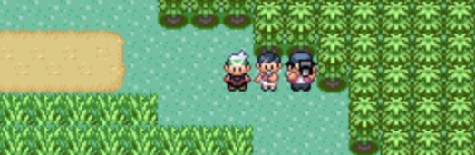
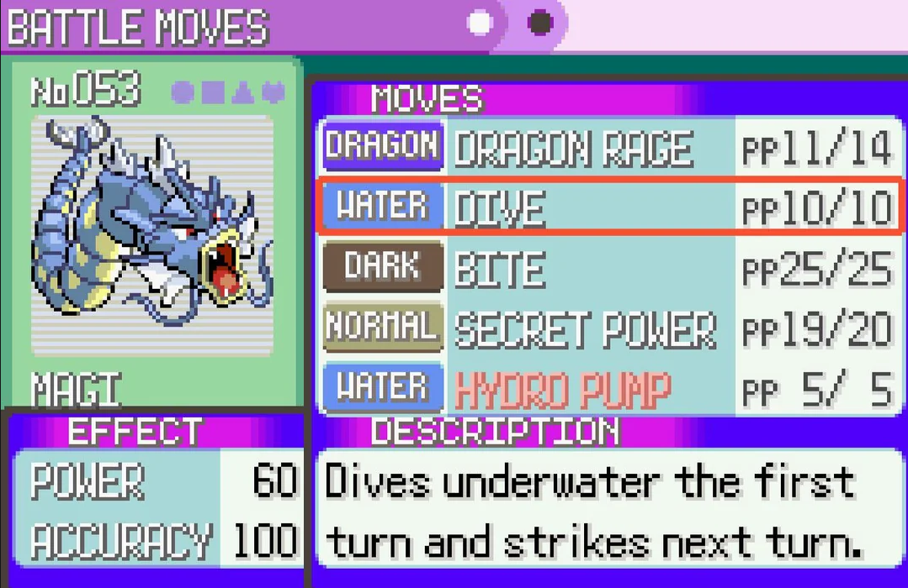
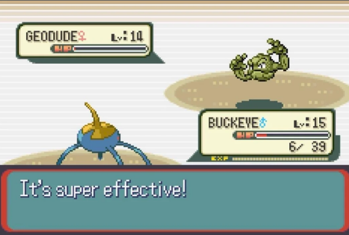

Use Exp Share
Make sure to return to Mr. Stone after delivering the letter to Steven. He will give you the Exp Share. When a pokemon in your party is holding this, earned Exp will be split between participating pokemon and the holder. This makes it easy to level up multiple pokemon without switching. Or use it to evolve a Magikarp into a Gyrados with zero combat!
Grind Exp with Gabby and Ty

Trainers Gaby and Ty will move between routes 111, 118, and 120 before eventually settling in Hoenn. You can battle them as many times as you want by flying from location to location and reloading each area. This nets you significant xp and money.
Understand Physical vs Special Damage

In Emerald, whether a move is Physical or Special depends on its type: Fire, Water, Grass, Electric, Ice, Psychic, Dragon, and Dark moves are all Special; Normal, Fightin g, Flying, Ground, Rock, Bug, Poison, Steel, and Ghost are all physical. Give special attacks to pokemon with high Sp. Attack and Physical moves to those with high Physical.
Understand STAB Boost

Each time a pokemon uses a move that matches one of it's own types that move will receive a 1.5x damage increase. Each pokemon should have at least one STAB in it's moveset in order to take maximum advantage of it's typing in matchups where the opponent is weak to it's type.
Use Exp Share
Make sure to return to Mr. Stone after delivering the letter to Steven. He will give you the Exp Share. When a pokemon in your party is holding this, earned Exp will be split between participating pokemon and the holder. This makes it easy to level up multiple pokemon without switching. Or use it to evolve a Magikarp into a Gyrados with zero combat!
Grind Exp with Gabby and Ty
Trainers Gaby and Ty will move between routes 111, 118, and 120 before eventually settling in Hoenn. You can battle them as many times as you want by flying from location to location and reloading each area. This nets you significant xp and money.
Understand Physical vs Special Damage
In Emerald, whether a move is Physical or Special depends on its type: Fire, Water, Grass, Electric, Ice, Psychic, Dragon, and Dark moves are all Special; Normal, Fighting, Flying, Ground, Rock, Bug, Poison, Steel, and Ghost are all physical. Give special attacks to pokemon with high Sp. Attack and Physical moves to those with high Physical.
Understand STAB Boost
Each time a pokemon uses a move that matches one of it's own types that move will receive a 1.5x damage increase. Each pokemon should have at least one STAB in it's moveset in order to take maximum advantage of it's typing in matchups where the opponent is weak to it's type.